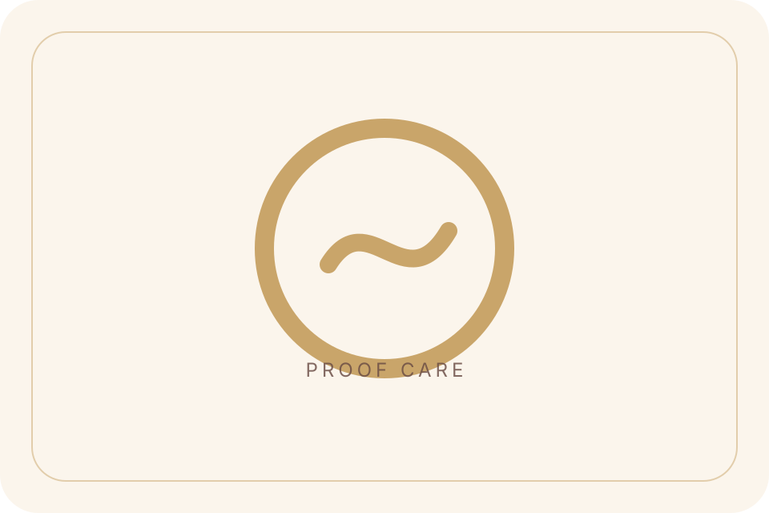
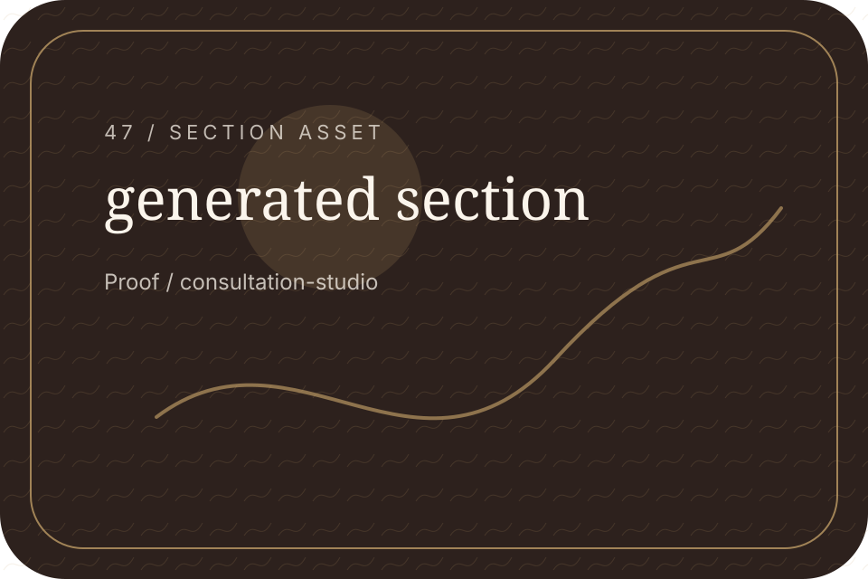
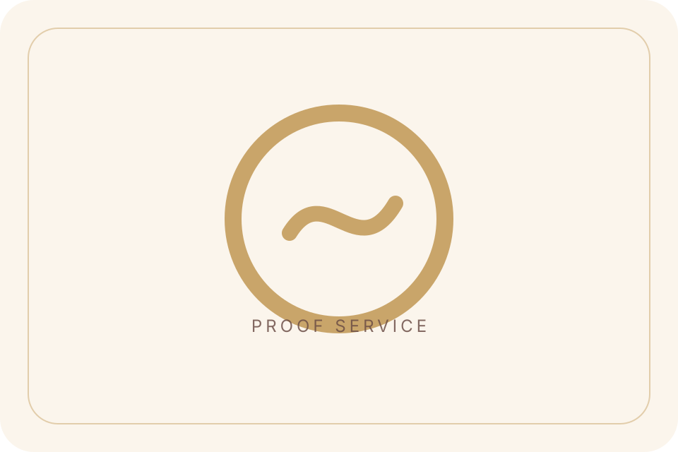
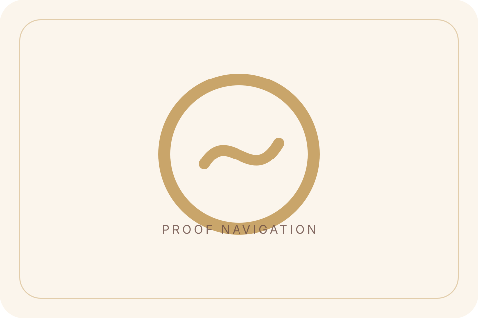
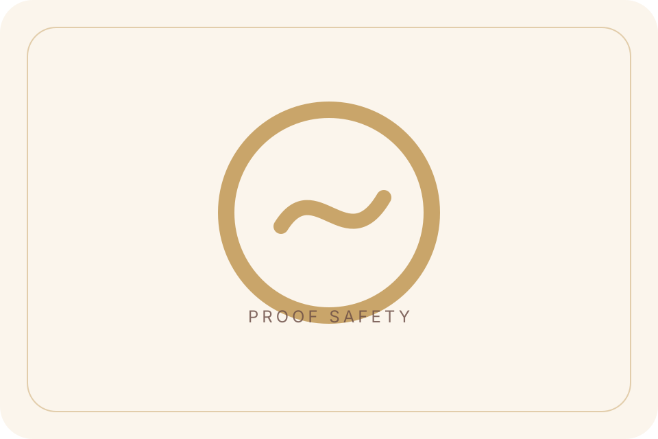
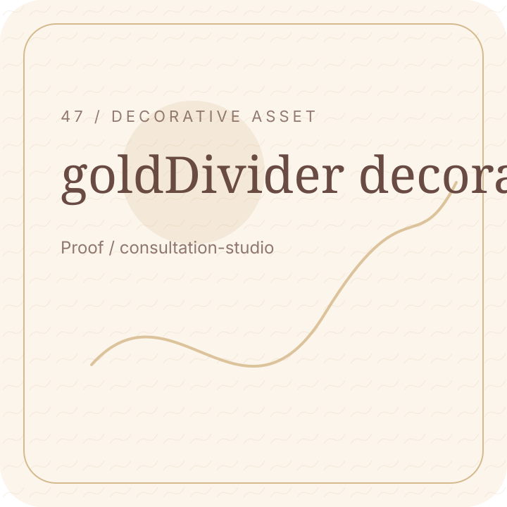

Clarity
Useful route.
Proof / Feedback Hero
Feedback should be treated with consent, privacy, and realistic context.
Proof / Consultation CTA
A consultation gives your questions context.
Proof / Consent First
Feedback should only be shared with appropriate permission.

Proof / No Guarantees
Feedback does not guarantee the same experience or outcome.
Proof / Experience Themes
Useful feedback themes include clarity, comfort, guidance, and trust.

Useful route.

Respect limits.

Useful route.

Clear explanations.
Proof / Privacy Note
Personal details and feedback must be handled carefully.
Proof / Trust Break
Responsibility matters in every part of the experience.

Proof / Results Guidance
Understand results responsibly before making decisions.